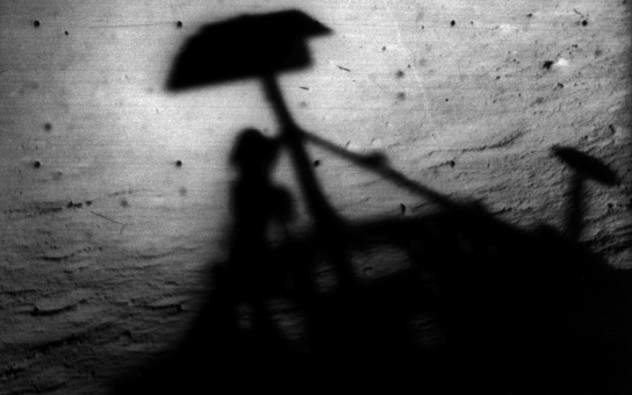
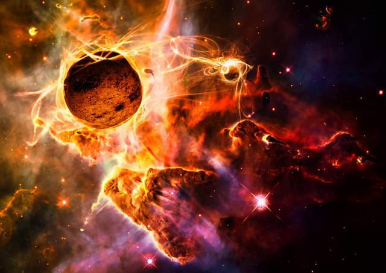
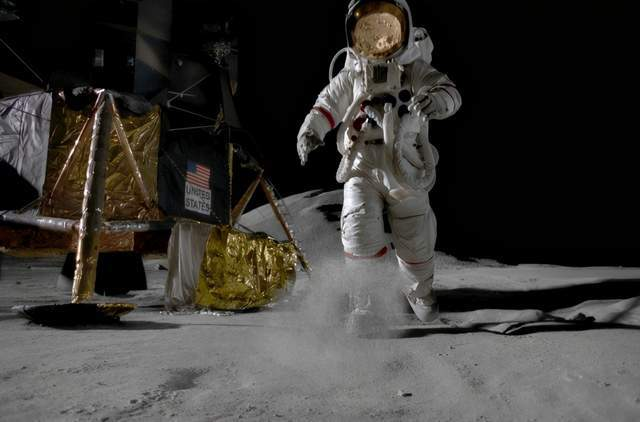
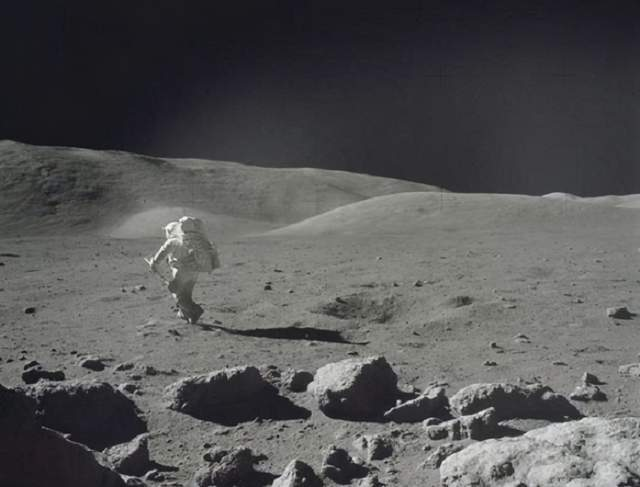
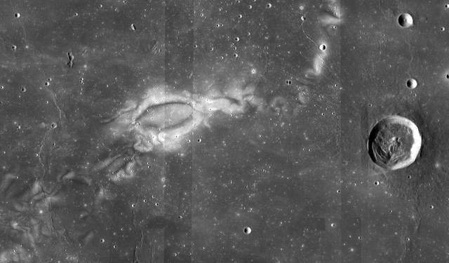
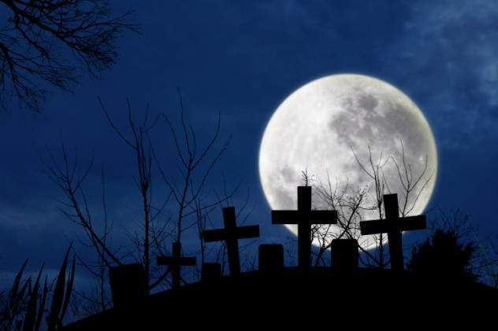
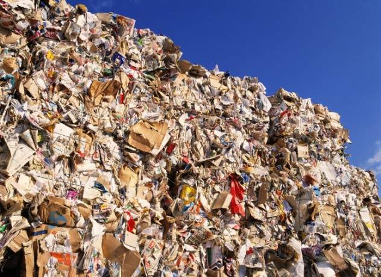
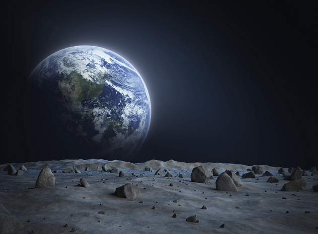
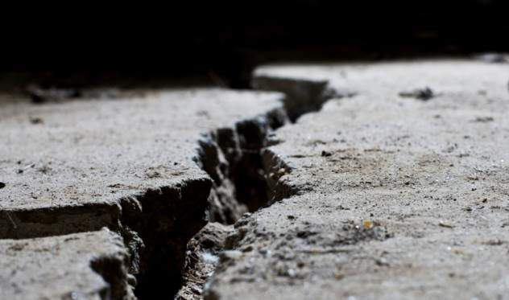

月球神秘又有趣的十個知識：
●（MOON）背景音樂
※未經許可，請勿擅自複製轉載。
01.月亮陰影

當阿姆斯特朗和巴茲·奧爾德林第一次登上月球時，他們很快就有了一個驚奇的發現：由於缺乏大氣層，月球的陰影比地球上的陰影暗得多。太陽沒有直接照耀的一切都是漆黑的。一旦有東西或者身體進入到陰影中，他們就再也看不到它了，像是直接消失了一樣，儘管太陽在天空中熊熊燃燒。
02.月亮和睡眠
月球對地球的影響是不容否認的。然而，它對人類的影響仍然是不斷爭論的來源。儘管科學還沒有能夠提供確鑿的證據，但許多人仍然認為滿月會帶出了人們最奇怪的行為。不過，有一件事科學已經能夠證實：月球會擾亂我們的睡眠週期。
根據瑞士巴塞爾大學的一項實驗。月球的不同形態會影響和乾擾人類的睡眠週期，滿月期間對人類的睡眠影響最大。也就是說滿月時人的睡眠會十分糟糕，而在月牙儿的時期人的睡眠會格外的好。
03.月亮的神秘起源

月亮是從哪裡來的？簡短的回答是，我們並不真正知道。然而，科學家們有一些大膽的猜測。
關於月球起源有五個主要理論。裂變理論認為，月球曾經是我們星球的一部分，在地球歷史的早期被分離。捕獲理論認為，月球只是遊蕩在宇宙中，直到我們的引力場抓住了它。其他理論則認為，月球要么是由一堆小行星凝結組成的，要么是地球與一顆火星大小的行星相撞所留下來的殘骸。
目前，月球起源故事最可能的候選者是巨型撞擊理論。根據這個版本，一顆正在形成的行星與地球相撞。隨之產生的碎片最終上升組成了月球。
04.低重力並不是一件好事

巴茲·奧爾德林（登月宇航員之一）說：“雖然月球上的重力只有地球上的六分之一，但在月球表面移動絕非易事。”
在月球上移動並沒有想像中那麼容易。宇航服又重又笨，而宇航員的腳會陷入月球塵埃中15厘米。
儘管重力較低，但月球上的慣性很高，因此，如果他們想快速移動或改變方向，事情就會變得十分困難。不僅如此，月球的地形上還充滿了隕石坑和其他讓宇航員絆倒的危險。
05.危險的月塵

月球的危險之一是月球塵埃。眾所周知，沙子在地球上隨處可見，但在月球上，月塵是十分危險的。月塵和麵粉一樣細，但極其粗糙。由於月塵的質地和月球的低重力，它可以粘附在任何地方。
美國宇航局經歷了許多由月球塵埃引起的問題。它不僅完全侵蝕了宇航員的靴子，還會遮擋大部分的太陽能板。據研究，長時間接觸這些東西甚至可能導致氣閘故障和宇航服破裂。
有趣的小知識，月塵聞起來像廢火藥。
06.月球上的奇怪凸起

在對月球拍攝的一些照片中，人們發現月球表面存在一些很奇怪的東西。它是一個至少1.6公里高的高聳結構。據超自然愛好者說，可能有一座大城堡懸浮在月球表面的高處。所有這些似乎都指向了一個生活在月球上並建造了複雜結構的先進文明。
美國宇航局從來沒有真正費心去揭穿這些奇怪的理論。
07.月亮是一个墓地

吉恩·舒梅克，著名的天文學家和地質學家。他發明了宇宙撞擊的科學研究，並想出了阿波羅宇航員用來研究月球的方法和技術。
吉恩自己一直想成為一名宇航員，不幸的是，由於身體原因而遭到了拒絕。這可能是他一生中最大的遺憾。當他去世時，美國宇航局實現了他最珍貴的願望，並在1998年與月球探測者一起將他的骨灰送上月球。現在，他的骨灰還在那裡，散落在茫茫的月塵之中。
08.月球垃圾

由於月球是人類唯一可以造訪的星球，所以在對月球進行多次造訪的宇航員們留下了相當多的垃圾。據估計，月球周圍有181.437公斤人造材料。
不過別擔心，這些垃圾大部分是各種實驗、太空探測器和月球車的碎片。事實上，其中一些在今天仍然有效。但也有一些真正的垃圾，如宇航員的糞便容器。
09.月球並不是繞著地球旋轉

大多數人認為月球是一顆衛星，但它實際上應該被歸類為行星。其一，它太大了，不能成為一個"真正的"衛星。它大約是地球直徑的四分之一，對於整個太陽係來說，月球都是其中最大的衛星。
由於月球體積大，它實際上根本不繞地球運行。相反，地球和月球圍繞它們之間的一個點相互繞行。這一點被稱為巴里中心，月球實際上繞地球運行的錯覺來自這樣一個事實，即巴里中心目前位於地殼內。但目前這個中心並沒有確定。
10.神秘的月震

儘管月球是一塊枯死的岩石，幾乎沒有地質活動，但月球卻很容易發生震動。這些類似於地震的震顫被稱為月震，月球總共有四種不同的震顫。前三種類型——深度地震、隕石撞擊產生的震動和太陽熱引起的熱地震相對無害，只是輕微的震動。然而，第四種月震卻讓人有點細思極恐。這種月震在里氏規模上可以記錄到5.5級，持續時間可以達到將近10分鐘。但這並不是讓人感到可怕的地方。
關於月震的可怕之處在於，我們並不知道是什麼原因造成的。未知往往是最可怕的。地球的地震通常是由構造板塊的運動引起的，但是月球沒有板塊構造，更別提因為板塊運動而地震了。一些研究人員認為，它們可能與地球的潮汐活動有某種聯繫。然而，這個理論存在著極大的漏洞，因為潮汐力會影響整個月球，但月震通常是局部的。
TOPへ
首頁へ